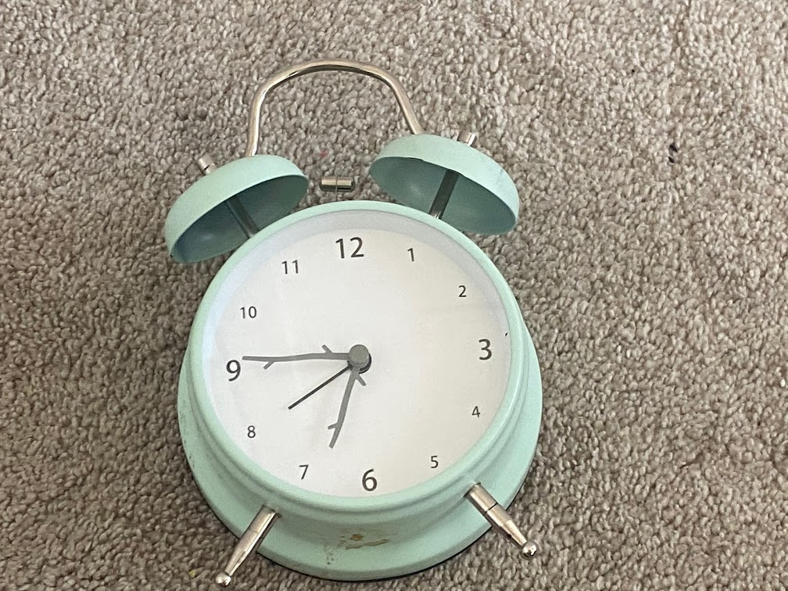
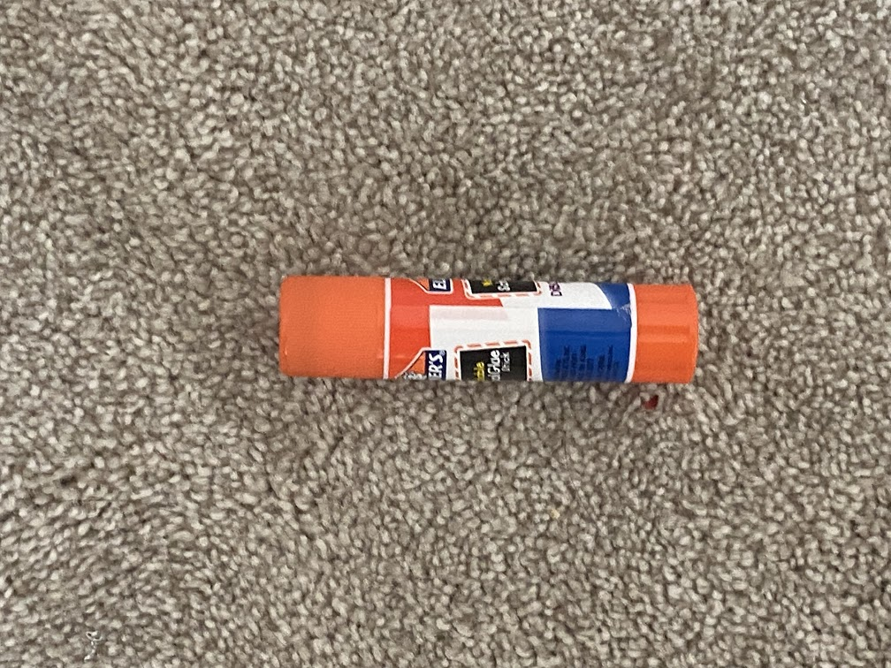
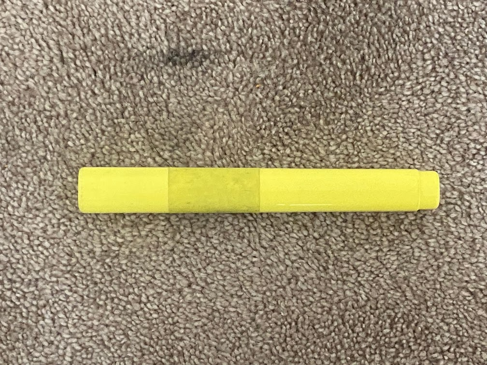
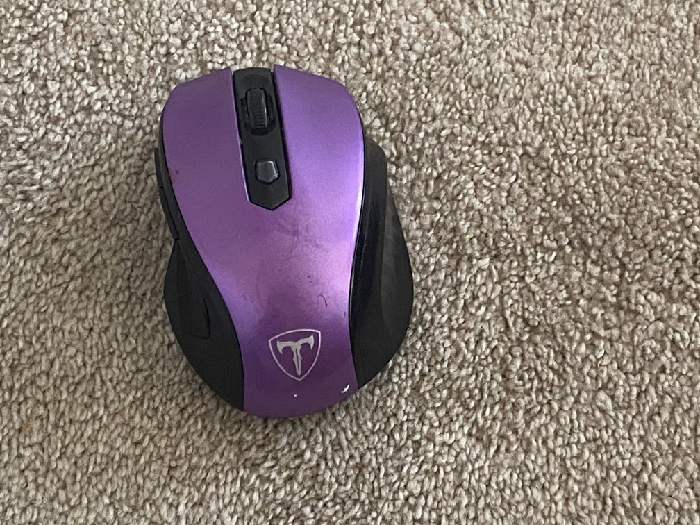
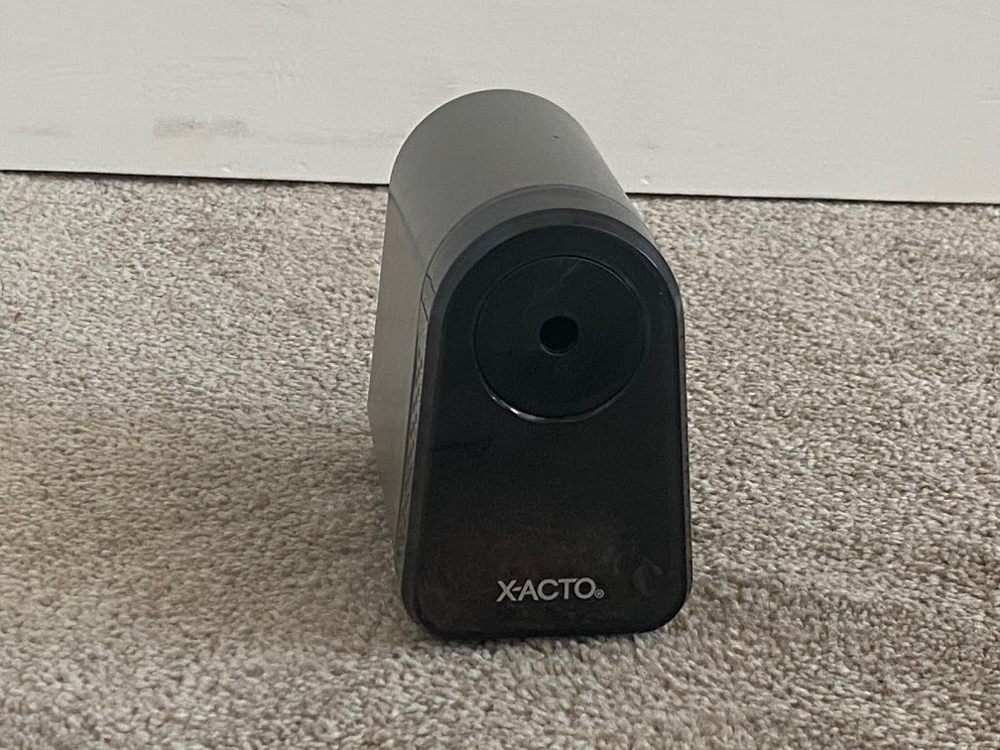
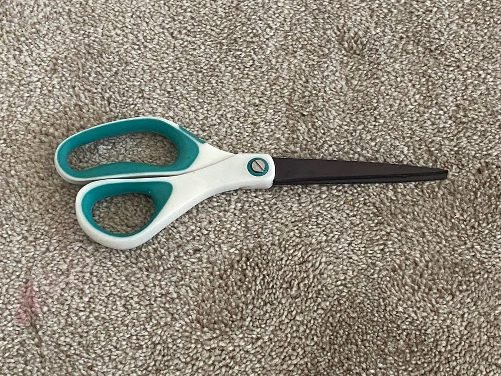
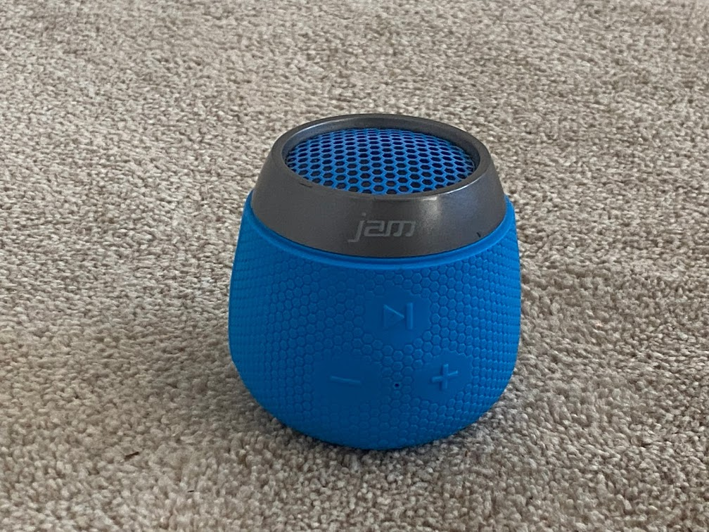
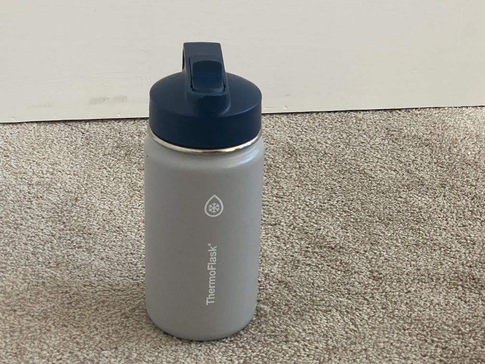

CASE STUDY
-
Test Image -

- Test Image - 
- Test Image - 
- Test Image - 
- Test Image - 
-
Test Image -

- Test Image - 
- Test Image - 
- Test Image - 
- Test Image - 
Output on Wolfram Project salt shaker
Output on MobileNet Model balloon
Result - The MobileNet Model's result is correct.
Output on Wolfram Project analog clock
Output on MobileNet Model analog clock
Result - Both of the Results are correct.
Output on Wolfram Project marker
Output on MobileNet Model Hair Spray
Result - None of the results are correct.
Output on Wolfram Project marker
Output on MobileNet Model pencil eraser
Result - The Wolfram Project is correct.
Output on Wolfram Project computer mouse
Output on MobileNet Model computer mouse
Result - Both results are correct.
Output on Wolfram Project pencil
Output on MobileNet Model screwdriver
Result - Both results are wrong.
Output on Wolfram Project oil filter
Output on MobileNet Model Speaker system
Result - Both results are incorrect
Output on Wolfram Project scissors
Output on MobileNet Model Racket
Result - The wolfram project result is correct.
Output on Wolfram Project switch
Output on MobileNet Model trash can
Result - None of the results are correct
Output on Wolfram Project vial
Output on MobileNet Model speaker
Result - The Wolfram Project has guessed the object, just in different words.
I used 10 images for this Study Case Project. The Wolfram Model Guessed 4 objects correctly and 6 wrong. The MobileNet Model Guessed 3 correctly and 7 wrong. The Wolfram Project is more accurate.